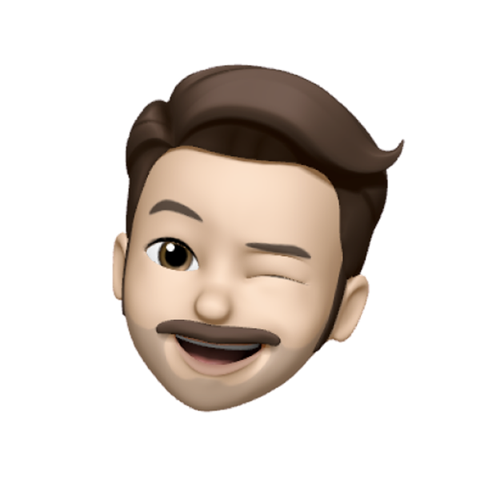
Продакт
Обсуждали цели и гипотезы
Проблема: помочь фонду на Авито можно было только разово, у фондов не было регулярных поступлений из этого канала.
Решение: спроектировала ежемесячную «Добрую подписку», от выбора фонда до управления в профиле, и добавила отчёты о работе фондов.
~55
Новых подписок в день, поток стабильный
+64%
Средний платёж выше минимального
~1 300
Открытий отчётов в день, людям важно знать о фонде
Чтобы поддерживать фонд постоянно, человеку приходилось повторять сценарий
Мы добавили ежемесячную помощь и отчёты о работе фондов
Я спроектировала ежемесячную подписку и управление ею
С командой оплаты согласовала представление способов оплаты в приложении и на вебе. Обновление баннера «Знака добра» согласовывала с charity-командой и командой экрана успешной подачи объявления.

Обсуждали цели и гипотезы
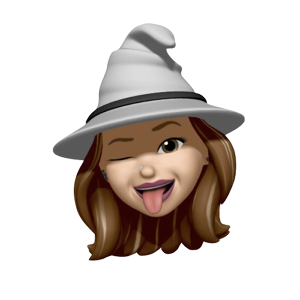
Согласовывали концепты

Продумывали логику
Проводили дизайн ревью
Обсуждали формулировки
Спроектировала подписку: условия видны до подключения, а сумму можно изменить прямо в профиле
Добавила отчёты фондов, чтобы видеть, на что фонд тратит деньги, до того как решиться помочь
Объединила экраны оплаты и благодарности во всём сценарии
У проекта было несколько связанных задач.
В разделе были только разовые пожертвования, и для каждой помощи сценарий проходили заново
В исследованиях люди просили отчёты и конкретные результаты работы фондов
Экран оплаты нужно было собрать в дизайн-системе, а экраны благодарности в charity-проектах не совпадали
Выбор фонда и суммы были разнесены на два экрана, а возможности подключить регулярную помощь не было
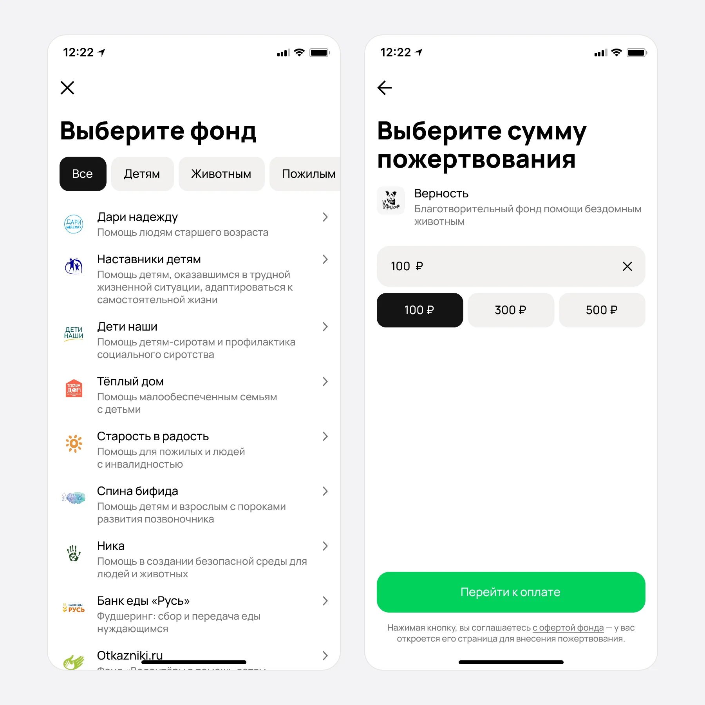
До
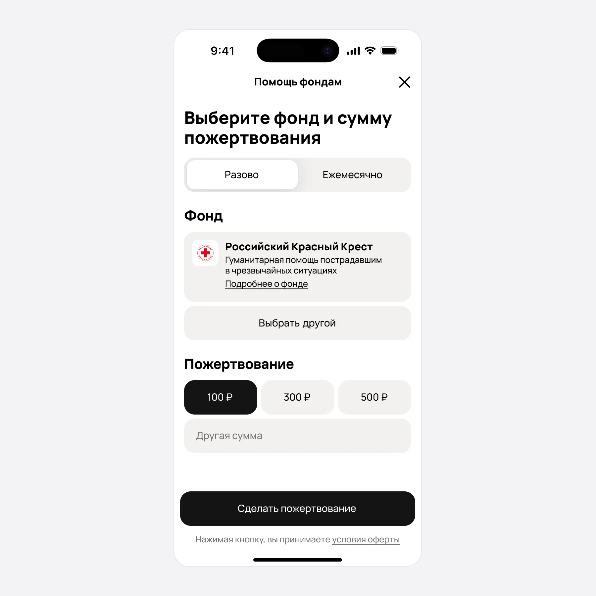
После
Каждое пожертвование требовало отдельных переходов, и для постоянной поддержки фонда приходилось заново проходить весь сценарий.
Проверяла эмоциональную подачу: 3D-персонаж на экране подписки и конфетти на экране благодарности. Отказалась: персонаж занимал половину экрана. Оставила: конфетти добавляли эмоциональную составляющую механики. Выбрала сдержанный вариант для страницы настройки, где главная информация помещается в один экран.
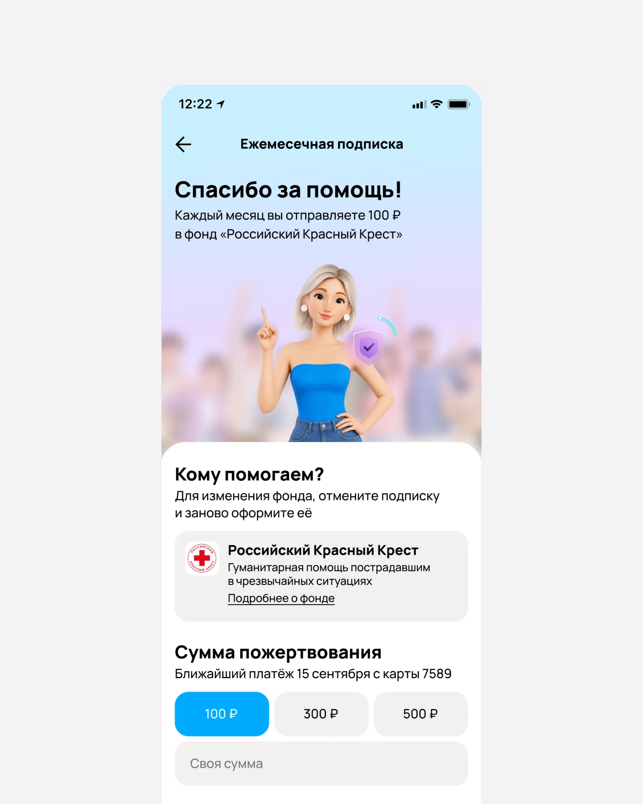
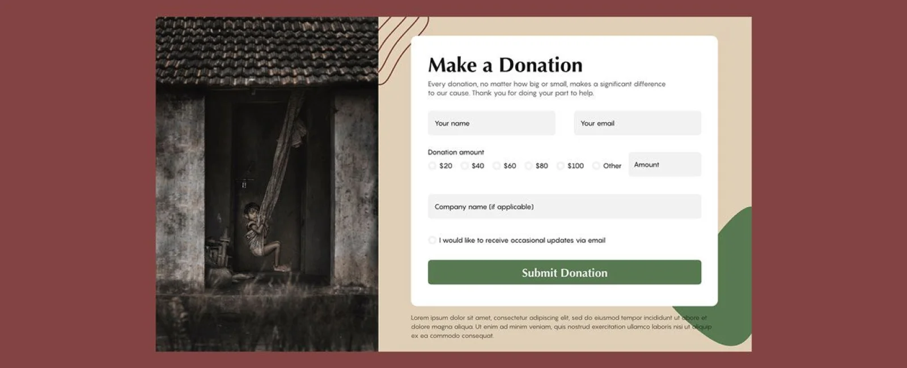
Я предусмотрела три точки входа в подписку: после подачи объявления, в выдаче объявлений, на чарити лендингах
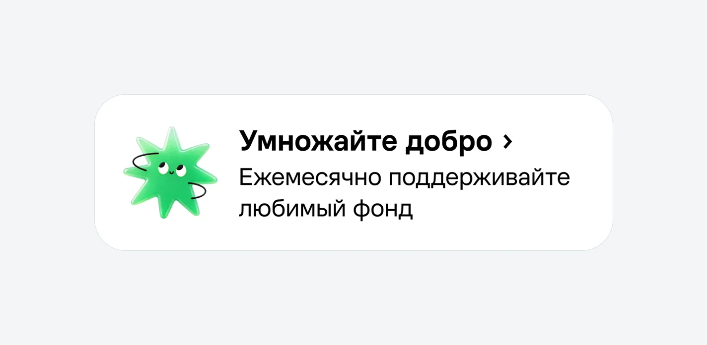


После подачи предлагаем помощь, когда основная задача уже завершена; в выдаче знакомим с подпиской через компактный баннер, сохраняя фокус на поиске; на charity-лендинге раскрываем условия подробнее для тех, кто уже интересуется благотворительностью.
Я перенесла выбор фонда на первый экран: до выбора суммы можно узнать о подставленном фонде, а при смене фонда открыть подробности о другом двойным нажатием. При разовом пожертвовании подставляем фонды из случайных категорий, чтобы помощь получали и менее популярные направления, помимо детей и животных.
На экране подключения я собрала основные условия подписки: фонд, сумму и ежемесячность списаний. Человек может выбрать 100, 300 или 500 ₽ либо указать свою сумму. Пояснение о повторении платежа находится рядом с суммой, до кнопки подключения.
Дополнительные условия вынесены в «Как это работает»: отсутствие комиссии, перечисление денег фондам напрямую, ежемесячный «Знак добра», возможность изменения и отключения подписки. Это позволяет сохранить основной экран компактным и дать подробности тем, кому они нужны.
Экраны благодарности в charity-сценариях выглядели по-разному, а прежнюю анимацию заменили статичным изображением. Я разработала общий подход для полноэкранного формата, шторки и модального окна: понятное подтверждение действия, вклад пользователя и благодарность.
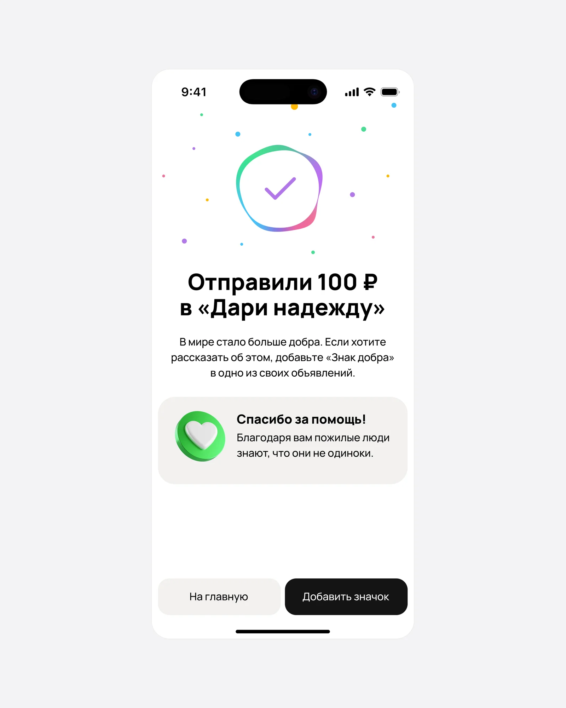
До
После
В подписке экран подтверждает подключение ежемесячной помощи и её условия. Добавила анимацию сердечек, чтобы сделать благодарность теплее; дополнительные действия — поделиться и добавить «Знак добра» на объявление.
Масштаб использования: около 2 000 показов экранов благодарности в день во всех charity-сценариях.
Управление подпиской доступно из профиля и со страниц «Знака добра» в charity. В профиле видны фонд, сумма и дата ближайшего платежа — сумму можно быстро изменить прямо в карточке.
В настройках можно указать другую сумму или отключить подписку. Чтобы сменить фонд, нужно отключить текущую подписку и оформить новую.
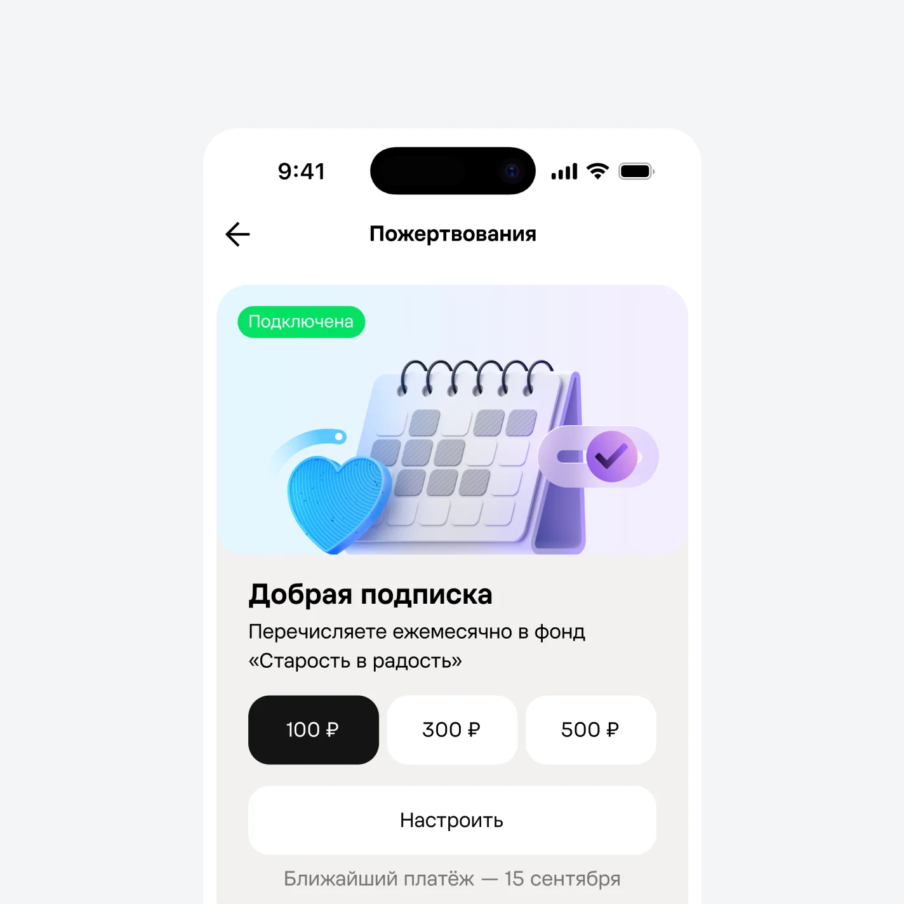
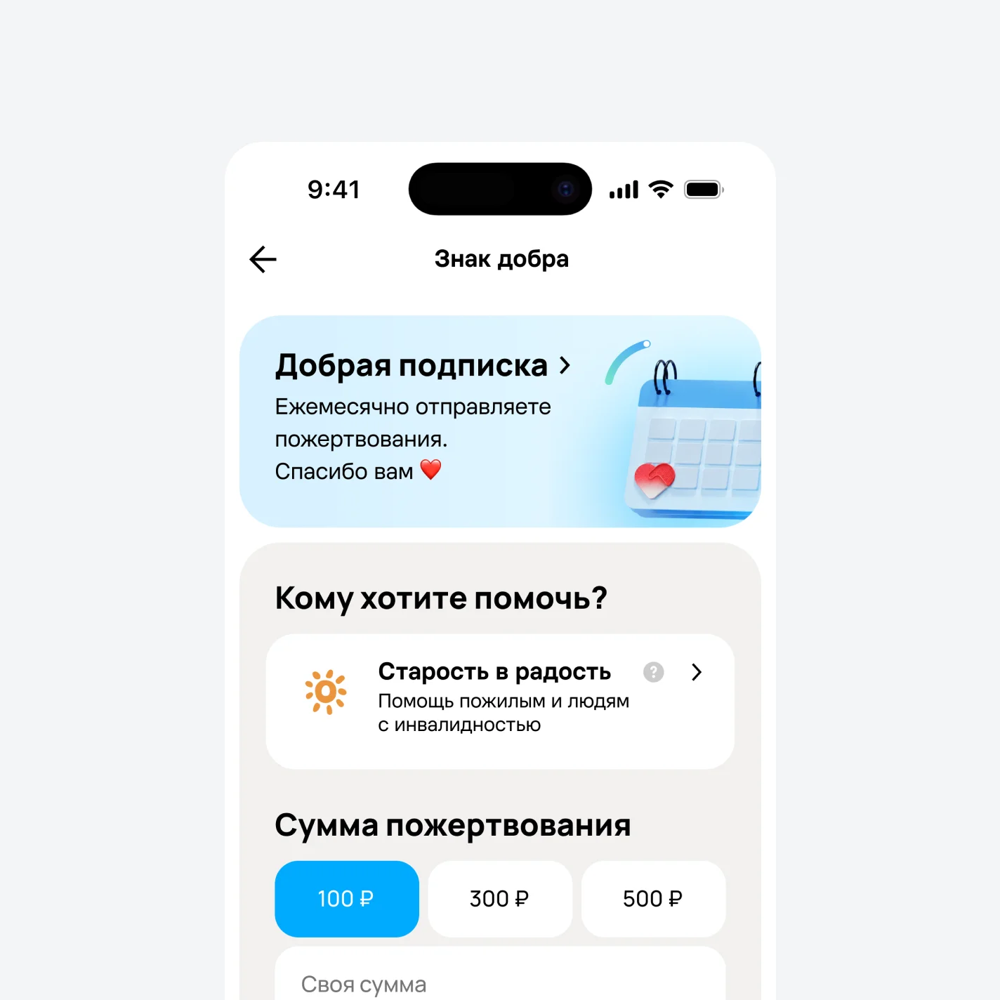
Запустили регулярную помощь с подключением и управлением подпиской, дополнили выбор фонда информацией о его работе. Дальше важно оценить повторные списания, отмены подписок и конверсию каждой точки входа в подключение.
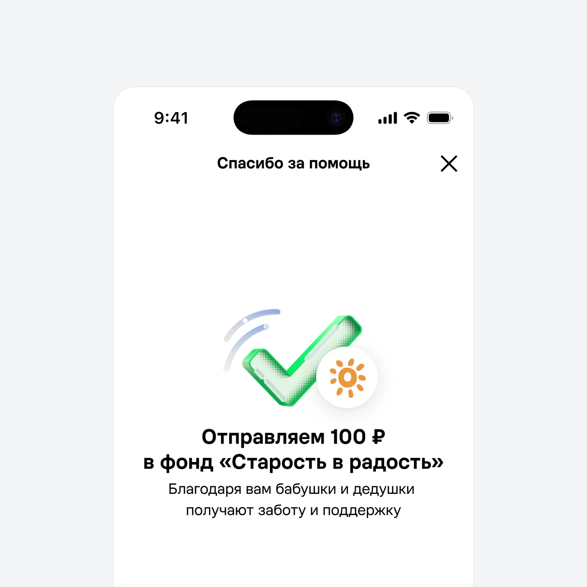
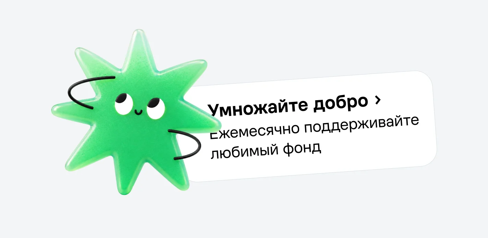
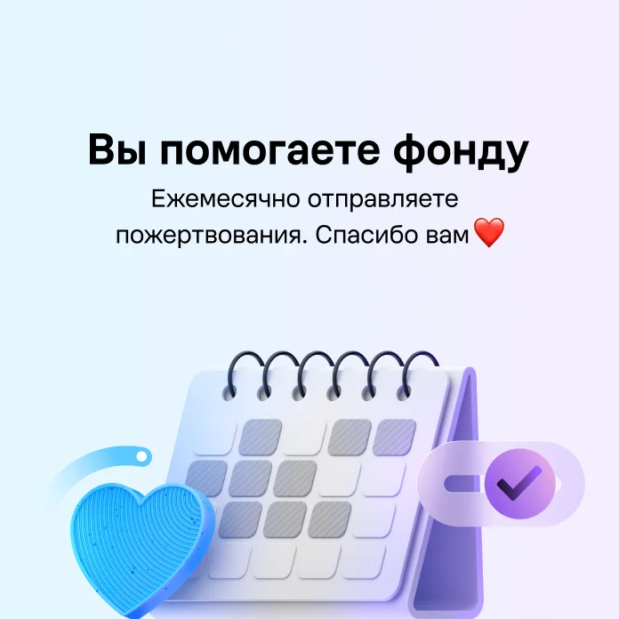
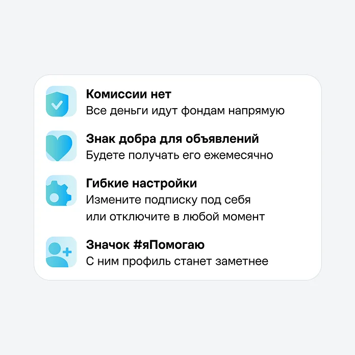
~55
Новых подписок в день, поток стабильный
+64%
Средний платёж выше минимального
~1 300
Открытий отчётов в день, людям важно знать о фонде